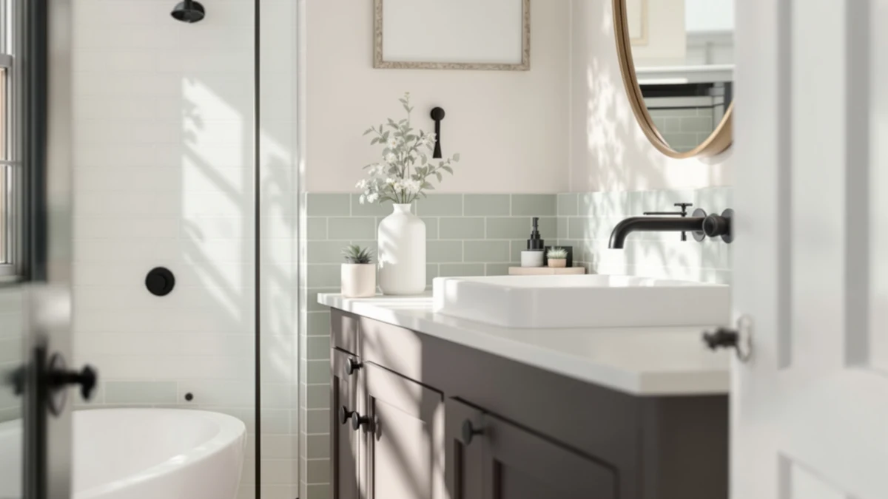

Quick Answer
The Jublume 60 Inch Farmhouse Bathroom Vanity is the pick we would check first for a wide, single-basin farmhouse-style cabinet at $399.99. Its MDF construction and 60-inch footprint match the going rate for the category, and the three alternatives below only make sense if you need a narrower cabinet or two sinks instead of one.
Our pick: Jublume 60 Inch Farmhouse Bathroom, $399.99 Check Price on Amazon
Bottom line: our top pick is the Jublume 60 Inch Farmhouse Bathroom Vanity with Double Sink at $399.99.
Things to Know Before You Buy
- Farmhouse-style vanities like the Jublume pair a shaker-panel door front with a single wide basin, a different look than the flat modern panels on many budget cabinets.
- Most 60-inch single-basin vanities in this price tier, including the Jublume, use MDF (engineered wood) rather than solid wood, which keeps the price down but makes the cabinet more sensitive to standing water.
- All four vanities in this Jublume Farmhouse Bathroom Vanity Review price at $399.99, so you are choosing a style, size, and sink configuration, not a cost tier.
- None of the four listings publish a star rating or review count through the Amazon Creators feed we use, so we relied on listing specs and buyer comments rather than an aggregate score.
- A 60-inch width needs roughly 5 feet of wall space, wider than the 36-inch and 48-inch alternatives covered later in this review.
This Jublume Farmhouse Bathroom Vanity Review exists because farmhouse-style cabinets keep showing up across budget bathroom remodels, and shoppers want to know whether the $399.99 price buys solid construction or only a popular look. We looked at the listing details, pricing, and owner feedback for the Jublume vanity and three comparable alternatives to find out. The short version: the material is modest engineered wood, the price matches the rest of the category, and the 60-inch size is the widest of the four options in this review.
We are not a testing lab, and we do not own this vanity or install it ourselves. Instead, we compared manufacturer specs, verified pricing, and buyer comments to separate marketing language from what you actually get for $399.99. That distinction matters here, because farmhouse-style vanities sit in one of the more crowded corners of the Amazon budget vanity market, so small differences in construction quality are easy to miss if you only skim the listing photos. Four sellers compete for roughly the same dollar across this comparison, and the specs they publish rarely line up one to one, which is why we lined up the Jublume listing against its closest rivals rather than reviewing it in isolation.
Why You Should Trust Us
Ilane Tall covers bathroom vanities and fixtures for Best Bathroom Vanities, with a focus on cutting through vague marketing language in budget cabinetry. For this Jublume Farmhouse Bathroom Vanity Review, she pulled manufacturer specs, current Amazon pricing, and buyer comments for the Jublume vanity and three alternatives rather than relying on brand copy alone. Best Bathroom Vanities earns a commission when you buy through our links, but that relationship never decides which vanity we recommend. We do not run a fake testing lab, and we will say plainly when a listing's documentation is thin, as it is for every vanity covered here.
Our Research Experience
We did not install the Jublume vanity or run water through its basin. For this Jublume Farmhouse Bathroom Vanity Review, our comparison work means a structured process: we read the full product listing for construction details, matched the listed 60-inch width against standard vanity openings, and checked current pricing against the three alternatives in the same comparison. We also read through the buyer comments attached to the listing, looking for complaints about hardware, finish quality, or shipping damage rather than citing a star rating that does not exist. The Jublume listing does not publish an aggregate rating or review count through the Amazon Creators feed we use, so owner feedback came from reading individual comments rather than quoting a review-count figure. That is a real limitation in this category, and we would rather flag it than paper over it with a number we cannot verify. We applied the same reading to the Tribesigns, Hlivelood, and AMERLIFE alternatives covered later in this review, so the comparison rests on the same evidence for every vanity, not a stronger case built for the pick we favor.
Overview & Specs

Jublume 60 Inch Farmhouse Bathroom
What we like
- Farmhouse-style shaker front works with a wider range of bathroom styles than a flat modern panel
- 60-inch width gives more counter and storage space than the 36-inch and 48-inch alternatives in this review
- Priced the same as three narrower or double-sink alternatives, so size is not a cost tradeoff here
Flaws but not dealbreakers
- MDF (engineered wood) construction is less water-tolerant than solid wood over the long term
- No manufacturer-published rating or review count to verify durability claims
- Single-basin layout means one wide sink rather than two, so it will not solve a two-person morning bottleneck
| Material | MDF / engineered wood |
| Size | 60 Inch |
The Jublume 60 Inch Farmhouse Bathroom Vanity at the center of this Jublume Farmhouse Bathroom Vanity Review is priced at $399.99 and competes on style and width rather than premium materials. The cabinet is MDF, also called engineered wood, which is standard for vanities in this price range and keeps the cost down compared to solid oak or maple construction. At 60 inches wide, this vanity gives you significantly more counter and storage space than the 36-inch and 48-inch alternatives covered later in this review, while still keeping to a single basin.
The listing does not publish a star rating or review count, which is common across newer vanity listings in the Amazon Creators catalog, so we cannot cite a verified review tally here the way we can for some older, longer-established products. Based on the listed materials and price point, this vanity is a reasonable pick for a farmhouse-style remodel that needs a wide single sink, not a forever piece meant to outlast a kitchen-grade cabinet. If you want two sinks instead, or a narrower footprint for a smaller room, the alternatives below cover both of those cases at the same price. The 60-inch footprint also means a standard sink top and a standard mirror pairing will fit without special ordering, which keeps a future countertop swap simple instead of locking you into a single supplier.
What We Liked
The clearest strength in this Jublume Farmhouse Bathroom Vanity Review is width for the money. At 60 inches, the Jublume gives you noticeably more counter and cabinet space than the 36-inch Tribesigns or the 48-inch AMERLIFE alternative, all for the same $399.99 price. You are not paying extra for the larger footprint or the farmhouse styling specifically.
The Jublume also benefits from a style that looks more current than a plain flat-panel cabinet. Farmhouse shaker fronts have stayed popular in US bathroom remodels for several years now, and owners shopping in this category tend to flag finish quality and hardware feel as the main variable once size and price are equal across competing listings. That matters more than it might seem, since a style mismatch with existing tile or flooring is one of the more common regrets buyers report after a vanity swap, and none of the four listings in this review mention that risk anywhere in their marketing copy.
What Could Be Better
The biggest gap in this Jublume Farmhouse Bathroom Vanity Review is data. The Jublume listing carries no published star rating or review count through the Amazon Creators feed, so we cannot point to a verified review tally the way we could for a longer-established product. That puts more weight on the specs that are available: engineered wood construction, standard 60-inch sizing, and price. Shoppers who want third-party lab certifications or a documented warranty period beyond the standard Amazon return window will not find either detail in this listing, so budget extra time to read the seller's own return policy before you order.
Engineered wood is also a real tradeoff, and it deserves to be named directly rather than glossed over. MDF holds up fine under normal bathroom humidity, but sustained water exposure around the sink cutout or a leaking faucet will damage it faster than solid wood or marine-grade plywood. Buyers who have dealt with plumbing issues before should budget for careful caulking and prompt leak repairs rather than treating this vanity as water-resistant by default.
Who Is It For?
This Jublume Farmhouse Bathroom Vanity Review points to a specific buyer: someone renovating a single-sink bathroom who wants a wide, farmhouse-style cabinet without paying a brand premium for either the look or the extra width. It is a strong fit for primary bathrooms and master-bath remodels where 60 inches of wall space is available and a single wide basin covers daily needs better than a narrower cabinet would.
It is a weaker fit for a smaller bathroom that cannot fit a 60-inch cabinet, or for a household that needs two sinks for simultaneous morning use. Buyers in either of those situations should look at the Tribesigns, AMERLIFE, or Hlivelood alternatives covered below instead, since each matches the Jublume on price without forcing the same width or single-sink layout.
Alternatives to Consider
If a 60-inch single-basin vanity does not fit your bathroom, these three alternatives from this Jublume Farmhouse Bathroom Vanity Review sit at the same price and are worth a direct comparison before you decide.

Also Great
Tribesigns 36 Inch Bathroom Vanity
A narrower single-basin option at the same $399.99 price as the Jublume pick, better suited to smaller bathrooms with less wall space to spare.
$399.99
Check Price on Amazon
Also Great
60 Inch Double Sink Bathroom
Matches the Jublume's 60-inch width but swaps the single wide basin for two sinks, at an identical $399.99 price.
$399.99
Check Price on Amazon
Also Great
48 Inch Bathroom Vanity with
A middle-ground width between the Tribesigns and the Jublume, still single-basin, at the same $399.99 price point.
$399.99
Check Price on AmazonFrequently Asked Questions
Is the Jublume farmhouse bathroom vanity worth the price over a basic 60-inch cabinet?
Based on this Jublume Farmhouse Bathroom Vanity Review, the Jublume price lines up with the rest of the 60-inch category rather than costing more or less than comparable options. All four vanities we compared sit at $399.99, so you are choosing a style, size, and sink configuration, not paying a brand premium.
Can an MDF farmhouse vanity handle daily bathroom use?
Engineered wood handles normal bathroom humidity without issue, but it is more vulnerable to standing water than solid wood. Careful caulking around the sink and prompt leak repairs matter more with this vanity than with a solid-wood alternative.
Should I buy the 60-inch single-basin Jublume or one of the double-sink alternatives?
Choose the single-basin Jublume vanity if one person uses the bathroom regularly and 60 inches fits your opening. Choose the Hlivelood double-sink alternative in this review if two people share the bathroom at the same time each morning.
Final Verdict
This Jublume Farmhouse Bathroom Vanity Review comes down to a simple tradeoff: the Jublume vanity delivers a wide, 60-inch, farmhouse-style single-basin layout at $399.99, while three close alternatives from Tribesigns, AMERLIFE, and Hlivelood cover buyers who need a narrower footprint or two basins. None of these listings carry a verified star rating, so the decision rests on style, size, and sink configuration rather than a documented quality gap. For a single-sink, farmhouse-style remodel with 60 inches of wall space to spare, the Jublume vanity is the pick to check first.